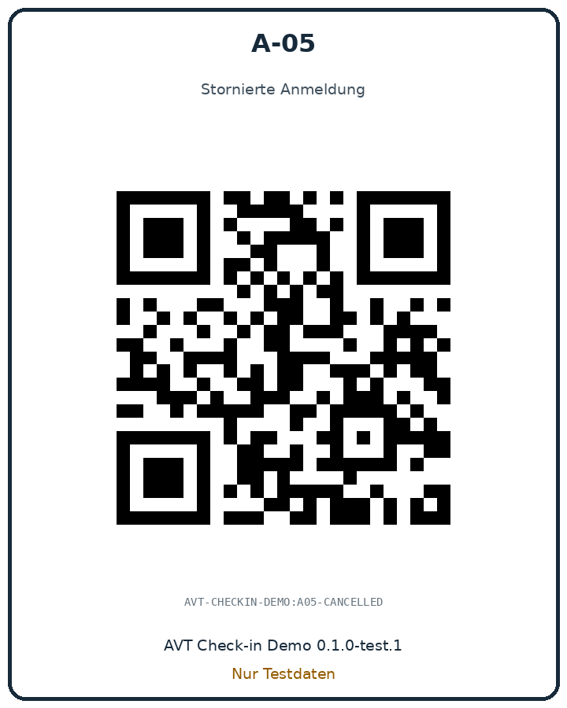
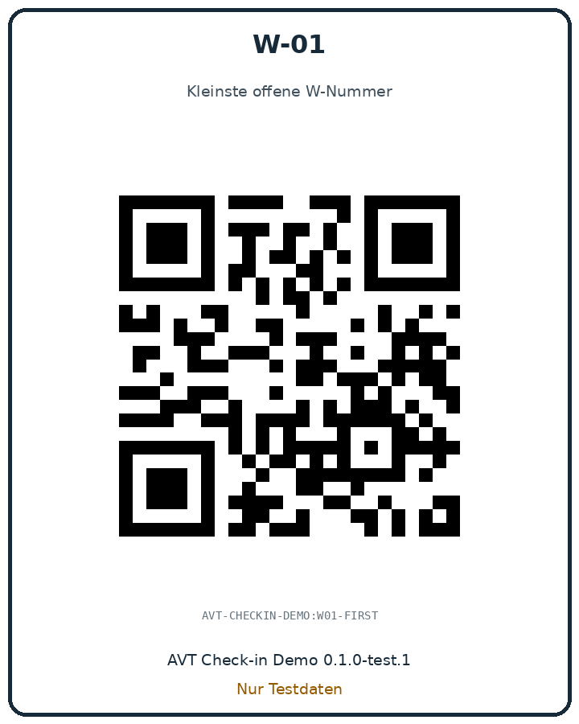
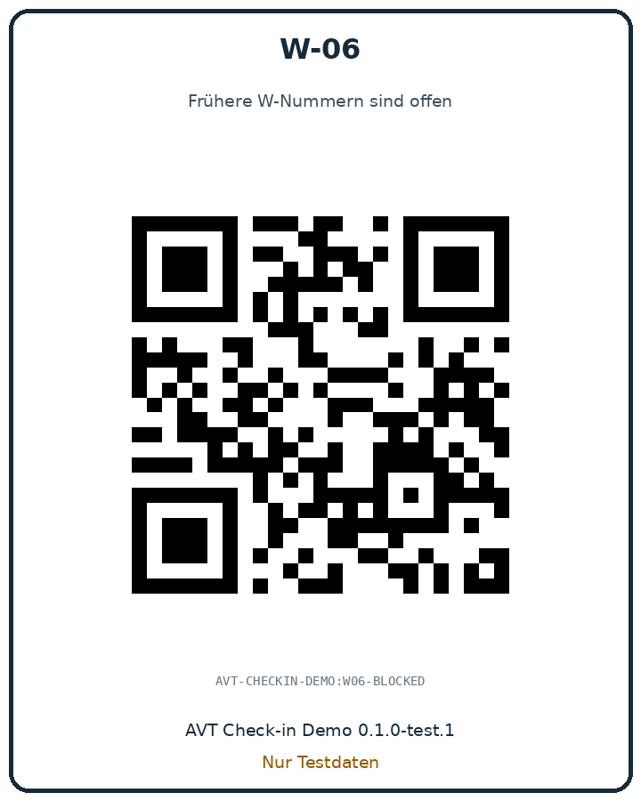
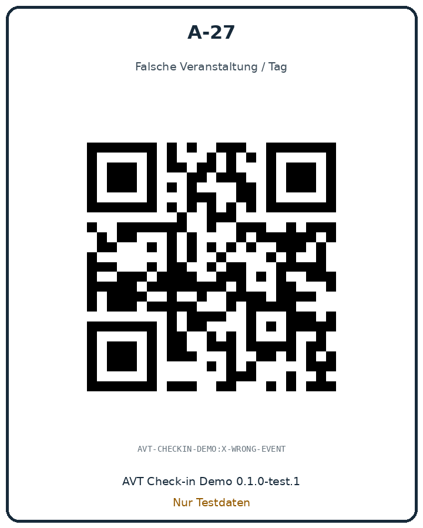

A-01
Regulär · 2 Erwachsene

Version 0.1.0-test.1
Regulär · 2 Erwachsene
Familie · Default 3 Personen

2 Erwachsene + 1 Kind

Bereits eingecheckt

Stornierte Anmeldung

Kleinste offene W-Nummer

Frühere W-Nummern sind offen

Falsche Veranstaltung / Tag
